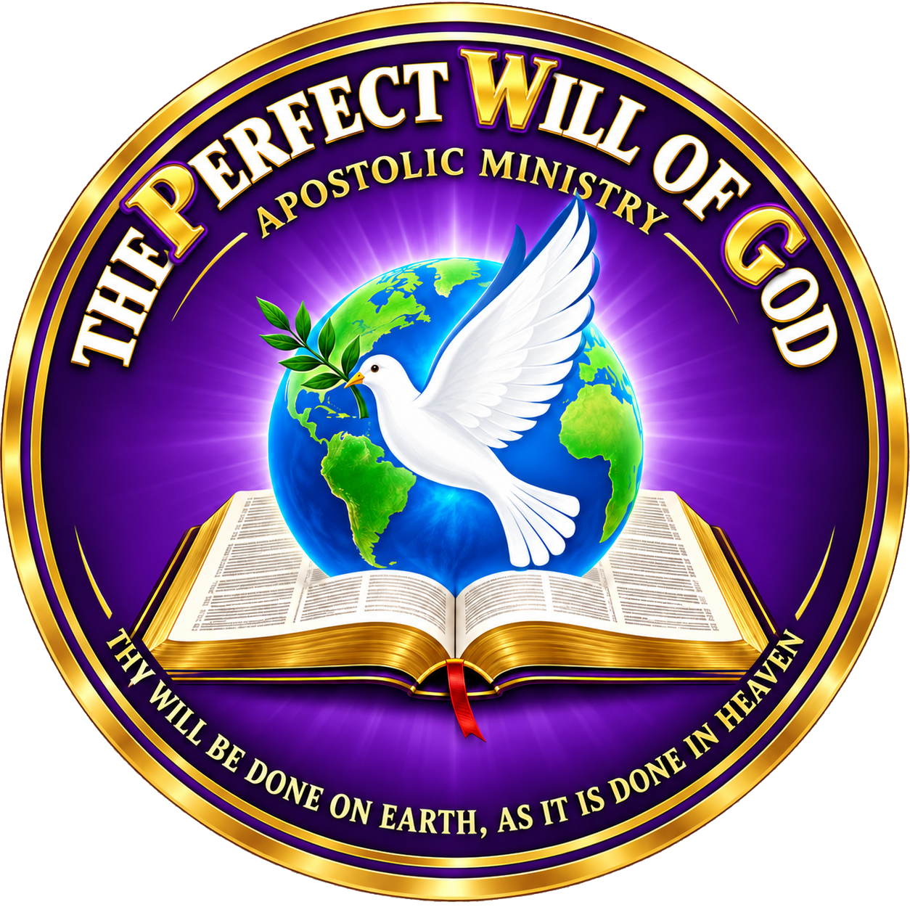
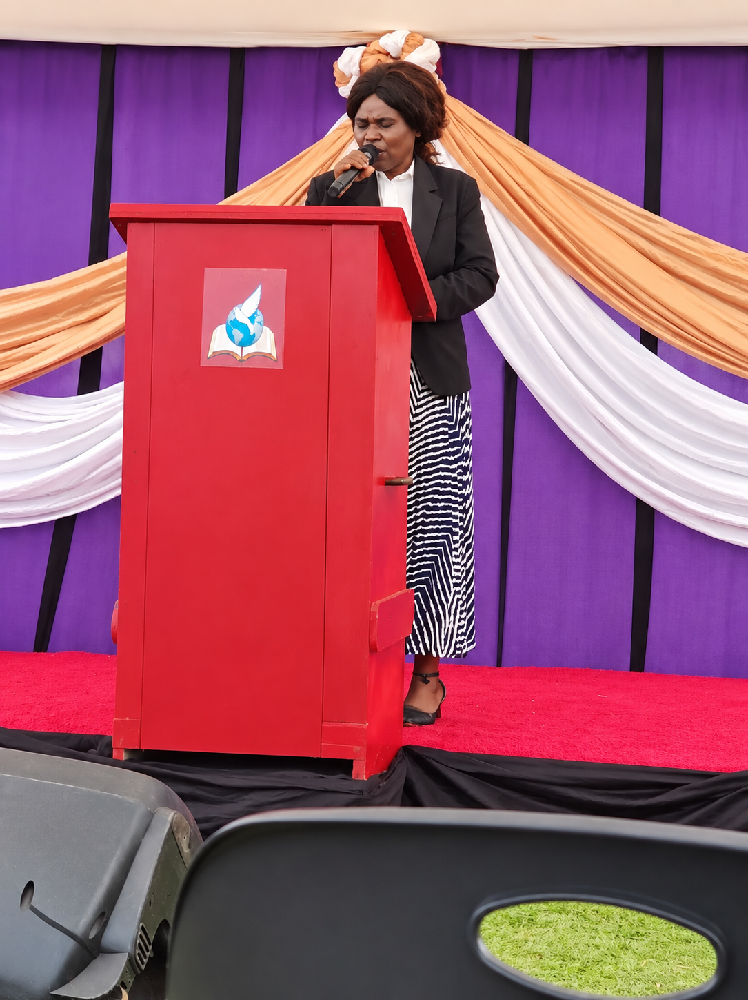

FOUNDER
Apostle N. Mntungwa
Founder of The Perfect Will of God Apostolic Ministry.

PWGAPOSTOLIC MINISTRYTHE PERFECT WILL OF GOD APOSTOLIC MINISTRY
A Christ-centred apostolic ministry devoted to the Word of God, prayer, worship, discipleship and sharing the Gospel of Jesus Christ.
“Be ye transformed by the renewing of your mind...” Romans 12:2
The Perfect Will of God Apostolic Ministry (PWG) was founded in October 2020 by Apostle N. Mntungwa, with the official support and co-leadership of Prophet N. Mntungwa. Our desire is to glorify Christ Jesus through holiness, truth and the power of the Holy Spirit.
“And be not conformed to this world: but be ye transformed by the renewing of your mind, that ye may prove what is that good, and acceptable, and perfect, will of God.”
ROMANS 12:2OUR LEADERSHIP
Meet the leaders serving The Perfect Will of God Apostolic Ministry and its branches.
Founder of The Perfect Will of God Apostolic Ministry.
Co-leader of The Perfect Will of God Apostolic Ministry.
BRANCH LEADERSHIP
Eshaya, KwaLavimisa, Eswatini (Swaziland)

Pastor serving the PWG branch in Eshaya, KwaLavimisa, Eswatini.
Additional ministry, department and branch leaders can be added as their details are confirmed.
Gathering to worship God, seek His presence and grow in prayer.
Upholding the authority of Scripture through teaching and training.
Proclaiming the Gospel and calling people to repentance and faith in Christ.
Making disciples, planting churches and edifying the Body of Christ.
Our Statement of Faith is grounded in the Holy Scriptures. We believe in the Bible as the inspired Word of God, the one God eternally existing as Father, Son and Holy Spirit, salvation by grace through faith in Jesus Christ, and the mission of the Church.
Learn more about PWG →Sermons, teachings and ministry media will be shared here. Check back for updates.
Our headquarters is in KwaSekane Settlements, Mkuze, KwaZulu-Natal, South Africa.